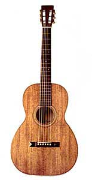

If you own and play a guitar, you know what it's worth in your heart and soul. Strumming its chords to hear its first distinct notes, taking a few lessons in an attempt to become its master, and then playing for friends and having the sound come out just right: smooth jazz, soul-filled rhythm and blues, or powerful rock and roll.
At Gage Vintage Guitars, we can't tell you what your guitar is worth in your heart and soul, but we can tell you what your guitar is worth in today's marketplace. Gage Vintage Guitars has been providing appraisals for nearly 20 years and is owned by Peter Gage. Peter is world renowned for his stormy songs "Firefly" and "Freedom" produced in the 1960's. He is recognized as one of the world's leading experts on guitars and has published several articles in Classic Guitar and Musician's World.
To get a written appraisal of your guitar, bring your guitar to Gage Vintage Guitars, located at 2134 Santa Monica Boulevard, Santa Monica, CA, 90401. We are open daily from 10 A.M. to 7 P.M. If you are unable to visit our store, send us the following by mail:
In our written appraisal, we may use abbreviations to describe the condition of your guitar. See the table below for a list of abbreviations and their meanings.
| Abbreviation | Meaning |
|---|---|
| EC | Excellent Condition |
| FC | Fair Condition |
| GC | Good Condition |
| MC | Mint Condition |
| PC | Poor Condition |
| VGC | Very Good Condition |
For further questions about appraisals, contact us at (310) 555-6767, or e-mail us.
| Home | Items in Stock | Repairs | Appraisals |
Copyright © 2006 Gage Guitar. All rights reserved.
2134 Santa Monica Boulevard, Santa Monica, CA, 90401.